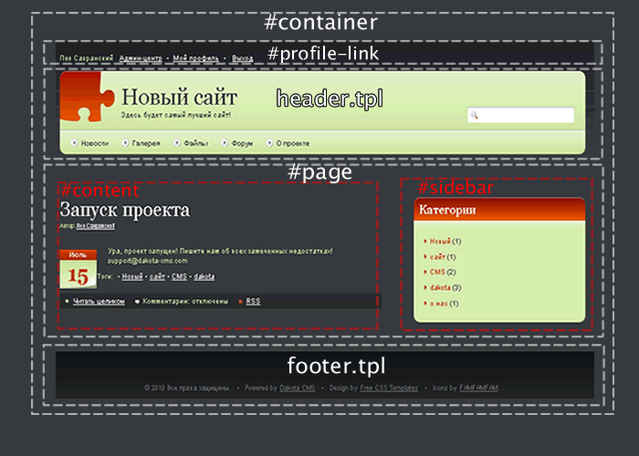
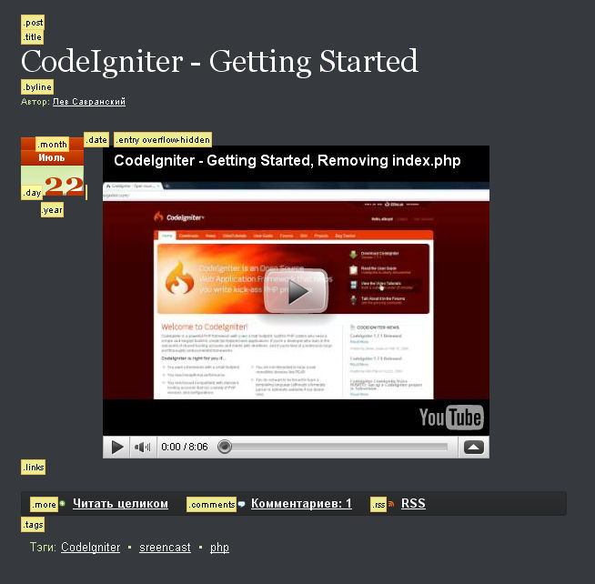

Шаблоны для сайта
- Шаблоны - куски кода, которые подключаются в стандартные шаблоны движка и полностью меняют внешний вид сайта.
- Шаблоны находятся в папке /templates/ и могут содержать css, javascript и html
- Папка /templates/common/ обслуживает весь сайт и не подлежит удалению или изменению
- Jquery-1.4.2 подключен на каждой странице
- Шаблоны для демонстрации возможности кастомизации взяты с сайта freelayouts. Для Dakota CMS подходят тысячи бесплатных шаблонов WordPress. Несомненно, понядобятся правки, но в целом они кастомизируются крайне просто. Переделка каждого из нижеприведенных шаблонов заняла не более пяти минут.
Информация
{kind=link}
{kind=link}
{kind=link}
- Для упрощения разработки иcпользуется именование частей страницы
- id #container, #profile-link, #page, #content, #sidebar зашиты в шаблонизаторе CMS. Таким образом, вы не можете переименовать их, но можете полностью переопределить их вид с помощью css
- В шаблонах header.tpl и footer.tpl Вы можете делать с версткой все, что угодно
- Вывести любую информацию в блок #sidebar вы можете с помощью виджетов
- Вывести информацию в блок #content .post .entry вы можете с помощью публикаций
- Работа с информацией в произвольном месте блока #content
- псевдоселекторы :after, :before
Например, этот CSS код выводит смайлик до и слово TEST после даты публикации.
-
jQuery - Сменить содержимое
$("div.post ").html("Hello Again");
$("div.post").text("Hello Again"); -
jQuery - Скрыть элемент
$("div.post ").remove();
Если вы владеете версткой, то для вас не составит труда разобраться в устройстве публикации и прочих
страниц.
- псевдоселекторы :after, :before
- Если Вам не нужен раздел авторизации наверху страницы или вы хотите кастомизировать его с помощью javascript, Вы можете скрыть #profile-link в настройках сайта
- При этом все данные о юзере по-прежнему доступны в javascript. На сайте кликните правой кнопкой и выберите просмотр HTML кода, чтобы просмотреть свои данные в Object userdata в начале страницы.
 как бы ни было заманчиво поправить верстку самой CMS, работайте
только с файлами в папке /templates/. Изменив файлы в папке \system\application\views вы не сможете
устанавливать обновления CMS - они порушат вашу верстку.
как бы ни было заманчиво поправить верстку самой CMS, работайте
только с файлами в папке /templates/. Изменив файлы в папке \system\application\views вы не сможете
устанавливать обновления CMS - они порушат вашу верстку.
Соглашение о именах и принципы верстки
Основной шаблон
Шаблон публикации
- Cкопируйте любой шаблон в папке /templates/ и назовите по своему усмотрению (Примеры приведены для названия mytemplate)
- Загрузите графику в папку /templates/mytemplate/img
Создание своего шаблона с нуля
- Cкопируйте шаблон в папку /templates/
- Cкопируйте файлы footer.tpl, header.tpl, dummy.html из любого существующего шаблона
- Стиль дожен быть по пути /templates/mytemplate/css/style.css
- Папка с картинками - /templates/mytemplate/img
- Перепишите пути к картинкам в css, если необходимо.
Изменение стороннего шаблона
- Редактируйте файл style.css
- Скрипты и стили для оформления определенной новости складывайте в любом удобном вам месте. Например /templates/mytemplate/extra/. Пути к ним нужно указать прямо в тексте публикации.
- Редактируйте файл dummy.html, не забывая о соглашении о именах
Приступаем к работе
- Все доступные слова и фразы вы можете найти в файле dakota_lang.php Подробнее о кастомизации языков Пример использования - ссылка 'наверх' в шаблоне footer.tpl
Использование многоязычных выражений в шаблоне
- Скриншоты шаблона должны быть в папке /templates/mytemplate/img/full.png (ширина 600px), /templates/mytemplate/img/thumb.png (128x93px)
- Пока нет скриншотов, система считает шаблон незавершенным, и вы не сможете пользоваться им.
Создание скриншотов
- Если вы удовлетворены видом файла dummy.html вашего нового шаблона, перенесите соотв. части dummy.html в footer.tpl, header.tpl
- Примените шаблон, нажав кнопку [Установить] в админ-центре.
- Если не подгрузились стили или графика, убедитесь, что пути к ним начинаются так /templates/mytemplate/img... а не ../mytemplate/img/...
- Подкорректируйте параметры и порядок виджетов - возможно, некоторые не впишутся в новый дизайн.
- Поделитесь разработкой с сообществом